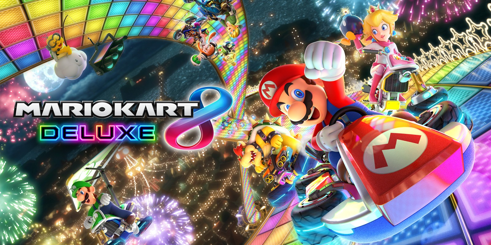

"Everyone's always trying to get in shape. Circle. Square. Triangle. I say love your own geometry, maaan."
Animal Crossing
Animal Crossing is a game where the player controls a character who moves to a deserted island after purchasing
a getaway package from Tom Nook, accomplishes assigned tasks, and develops the island as they choose. They can
gather and craft items, customize the island, and develop it into a community of animal villagers.
Mario Kart 8 deluxe

Mario Kart 8 Deluxe is a racing game on the Nintendo Switch where players control different characters from the
Mario universe, racing against each other on different tracks while collecting power-ups to hinder opponents or
gain speed advantages.
Super Mario Party
Super Mario Party has many different game modes including a Monopoly-style game where players roll a dice and
travel across a board, and play minigames such as bike race. The game has differnt gamemodes for up to four real
life controllers.
Super Mario Bros U Deluxe
Bowser takes over the Mushroom Kingdom and holds Peach hostage once again. Now getting up from being thrown by a mechanical arm, the Mario Bros, the Toad Duo, Toadette, and Nabbit must make their way through the acorn filled worlds to take back the castle!